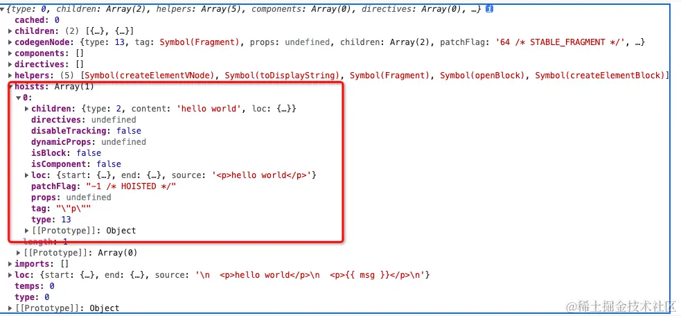
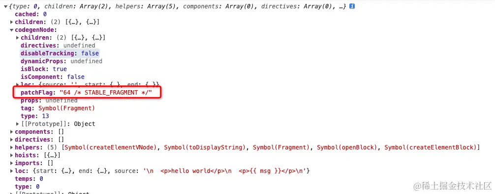

本小节，我们将进入模版编译的最后一步：代码生成器 genetate。
js复制代码generate(
ast,
extend({}, options, {
prefixIdentifiers
})
)
一起来看一下 generate 的核心实现：
js复制代码export function generate(ast, options = {}) {
// 创建代码生成上下文
const context = createCodegenContext(ast, options)
const {
mode,
push,
prefixIdentifiers,
indent,
deindent,
newline,
scopeId,
ssr
} = context
const hasHelpers = ast.helpers.length > 0
const useWithBlock = !prefixIdentifiers && mode !== 'module'
const genScopeId = !__BROWSER__ && scopeId != null && mode === 'module'
const isSetupInlined = !__BROWSER__ && !!options.inline
// 生成预设代码
const preambleContext = isSetupInlined
? createCodegenContext(ast, options)
: context
// 不在浏览器的环境且 mode 是 module
if (!__BROWSER__ && mode === 'module') {
genModulePreamble(ast, preambleContext, genScopeId, isSetupInlined)
} else {
genFunctionPreamble(ast, preambleContext)
}
// 进入 render 函数构造
const functionName = `render`
const args = ['_ctx', '_cache']
const signature = args.join(', ')
push(`function ${functionName}(${signature}) {`)
indent()
if (useWithBlock) {
// 处理带 with 的情况，Web 端运行时编译
push(`with (_ctx) {`)
indent()
if (hasHelpers) {
push(`const { ${ast.helpers.map(aliasHelper).join(', ')} } = _Vue`)
push(`\n`)
newline()
}
}
// 生成自定义组件声明代码
if (ast.components.length) {
genAssets(ast.components, 'component', context)
if (ast.directives.length || ast.temps > 0) {
newline()
}
}
// 生成自定义指令声明代码
if (ast.directives.length) {
genAssets(ast.directives, 'directive', context)
if (ast.temps > 0) {
newline()
}
}
// 生成临时变量代码
if (ast.temps > 0) {
push(`let `)
for (let i = 0; i < ast.temps; i++) {
push(`${i > 0 ? `, ` : ``}_temp${i}`)
}
}
if (ast.components.length || ast.directives.length || ast.temps) {
push(`\n`)
newline()
}
if (!ssr) {
push(`return `)
}
// 生成创建 VNode 树的表达式
if (ast.codegenNode) {
genNode(ast.codegenNode, context)
} else {
push(`null`)
}
if (useWithBlock) {
deindent()
push(`}`)
}
deindent()
push(`}`)
return {
ast,
code: context.code,
preamble: isSetupInlined ? preambleContext.code : ``,
map: context.map ? (context.map as any).toJSON() : undefined
}
}
这个函数看起来有点复杂，我们先来简单了解一下：generate 函数，接收两个参数，分别是经过转换器处理的 ast 抽象语法树，以及 options 代码生成选项。最终返回一个 CodegenResult 类型的对象：
js复制代码return {
ast, // 抽象语法树
code, // render 函数代码字符串
preamble, // 代码字符串的前置部分
map, //可选的 sourceMap
}
接下来开始深入了解一下该函数的核心功能。
generate 函数的第一步是通过 createCodegenContext 来创建 CodegenContext 上下文对象。一起来看一下其核心实现：
js复制代码function createCodegenContext(ast, { mode = 'function', prefixIdentifiers = mode === 'module', sourceMap = false, filename = `template.vue.html`, scopeId = null, optimizeBindings = false, runtimeGlobalName = `Vue`, runtimeModuleName = `vue`, ssr = false }) {
const context = {
mode,
prefixIdentifiers,
sourceMap,
filename,
scopeId,
optimizeBindings,
runtimeGlobalName,
runtimeModuleName,
ssr,
source: ast.loc.source,
code: ``,
column: 1,
line: 1,
offset: 0,
indentLevel: 0,
pure: false,
map: undefined,
helper(key) {
return `_${helperNameMap[key]}`
},
push(code) {
context.code += code
// ... 省略 非浏览器环境下的 addMapping
},
indent() {
newline(++context.indentLevel)
},
deindent(withoutNewLine = false) {
if (withoutNewLine) {
--context.indentLevel
}
else {
newline(--context.indentLevel)
}
},
newline() {
newline(context.indentLevel)
}
}
function newline(n) {
context.push('\n' + ` `.repeat(n))
}
return context
}
可以看出 createCodegenContext 创建的 context 中，核心维护了一些基础配置变量和一些工具函数，我们来看几个比较常用的函数：
push：该函数的功能是将传入的字符串拼接入上下文中的 code 属性中。并且会生成对应的 sourceMap。indent: 作用是缩进deindent: 回退缩进newline: 插入新的一行其中，index、deindent、newline 是用来辅助生成的代码字符串，用来格式化结构，让生成的代码字符串非常直观，就像在 ide 中敲入的制表符、换行、格式化代码块一样。
在创建上下文变量完成后，接着进入生成预设代码的流程：
scss复制代码// 不在浏览器的环境且 mode 是 module
if (!__BROWSER__ && mode === 'module') {
// 使用 ES module 标准的 import 来导入 helper 的辅助函数，处理生成代码的前置部分
genModulePreamble(ast, preambleContext, genScopeId, isSetupInlined)
} else {
// 否则生成的代码前置部分是一个单一的 const { helpers... } = Vue 处理代码前置部分
genFunctionPreamble(ast, preambleContext)
}
mode 有两个选项:
module: 会通过 ES module 的 import 来导入 ast 中的 helpers 辅助函数，并用 export 默认导出 render 函数。function 时，就会生成一个单一的 const { helpers... } = Vue 声明，并且 return 返回 render 函数。先看一下 genModulePreamble 的实现：
javascript复制代码function genModulePreamble(ast, context, genScopeId, inline) {
const {
push,
newline,
optimizeImports,
runtimeModuleName,
ssrRuntimeModuleName
} = context
// ...
if (ast.helpers.length) {
if (optimizeImports) {
// 生成 import 声明代码
push(
`import { ${ast.helpers
.map(s => helperNameMap[s])
.join(', ')} } from ${JSON.stringify(runtimeModuleName)}\n`
)
push(
`\n// Binding optimization for webpack code-split\nconst ${ast.helpers
.map(s => `_${helperNameMap[s]} = ${helperNameMap[s]}`)
.join(', ')}\n`
)
} else {
push(
`import { ${ast.helpers
.map(s => `${helperNameMap[s]} as _${helperNameMap[s]}`)
.join(', ')} } from ${JSON.stringify(runtimeModuleName)}\n`
)
}
}
// 提升静态节点
genHoists(ast.hoists, context)
newline()
if (!inline) {
push(`export `)
}
}
其中 ast.helpers 是在 transform 阶段通过 context.helper 方法添加的，它的值如下：
js复制代码[
Symbol(resolveComponent),
Symbol(createVNode),
Symbol(createCommentVNode),
Symbol(toDisplayString),
Symbol(openBlock),
Symbol(createBlock)
]
所以这一步结束后，得到的代码为
js复制代码import { createElementVNode as _createElementVNode, toDisplayString as _toDisplayString, Fragment as _Fragment, openBlock as _openBlock, createElementBlock as _createElementBlock } from "vue"
然后执行 genHoists ：
js复制代码function genHoists(hoists, context) {
if (!hoists.length) {
return
}
context.pure = true
const { push, newline } = context
newline()
hoists.forEach((exp, i) => {
if (exp) {
push(`const _hoisted_${i + 1} = `)
genNode(exp, context)
newline()
}
})
context.pure = false
}
核心功能就是遍历 ast.hoists 数组，该数组是我们在 transfrom 的时候构造的，然生成静态提升变量定义的方法。在进行 hoists 数组遍历的时候，这里有个 geNode 函数，是用来生成节点的创建字符串的，一起来看一下其实现：
js复制代码function genNode(node, context) {
if (isString(node)) {
context.push(node)
return
}
if (isSymbol(node)) {
context.push(context.helper(node))
return
}
// 根据 node 节点类型不同，调用不同的生成函数
switch (node.type) {
case NodeTypes.ELEMENT:
case NodeTypes.IF:
case NodeTypes.FOR:
genNode(node.codegenNode!, context)
break
case NodeTypes.TEXT:
genText(node, context)
break
case NodeTypes.SIMPLE_EXPRESSION:
genExpression(node, context)
break
case NodeTypes.INTERPOLATION:
genInterpolation(node, context)
break
case NodeTypes.TEXT_CALL:
genNode(node.codegenNode, context)
break
case NodeTypes.COMPOUND_EXPRESSION:
genCompoundExpression(node, context)
break
case NodeTypes.COMMENT:
genComment(node, context)
break
case NodeTypes.VNODE_CALL:
genVNodeCall(node, context)
break
case NodeTypes.JS_CALL_EXPRESSION:
genCallExpression(node, context)
break
case NodeTypes.JS_OBJECT_EXPRESSION:
genObjectExpression(node, context)
break
case NodeTypes.JS_ARRAY_EXPRESSION:
genArrayExpression(node, context)
break
case NodeTypes.JS_FUNCTION_EXPRESSION:
genFunctionExpression(node, context)
break
case NodeTypes.JS_CONDITIONAL_EXPRESSION:
genConditionalExpression(node, context)
break
case NodeTypes.JS_CACHE_EXPRESSION:
genCacheExpression(node, context)
break
case NodeTypes.JS_BLOCK_STATEMENT:
genNodeList(node.body, context, true, false)
break
/* istanbul ignore next */
case NodeTypes.IF_BRANCH:
// noop
break
default:
}
}
根据上一小节的 demo
html复制代码<template>
<p>hello world</p>
<p>{{ msg }}</p>
</template>
我们经过 transform 后得到的 AST 内容大致如下：

其中 hoists 内容中存储的是 <p>hello world</p> 节点的信息，其中 type = 13 表示的是 VNODE_CALL 类型，进入 genVNodeCall 函数中：
js复制代码function genVNodeCall(node, context) {
const { push, helper, pure } = context
const {
tag,
props,
children,
patchFlag,
dynamicProps,
directives,
isBlock,
disableTracking,
isComponent
} = node
if (directives) {
push(helper(WITH_DIRECTIVES) + `(`)
}
if (isBlock) {
push(`(${helper(OPEN_BLOCK)}(${disableTracking ? `true` : ``}), `)
}
if (pure) {
push(PURE_ANNOTATION)
}
const callHelper = isBlock
? getVNodeBlockHelper(context.inSSR, isComponent)
: getVNodeHelper(context.inSSR, isComponent)
push(helper(callHelper) + `(`, node)
genNodeList(
genNullableArgs([tag, props, children, patchFlag, dynamicProps]),
context
)
push(`)`)
if (isBlock) {
push(`)`)
}
if (directives) {
push(`, `)
genNode(directives, context)
push(`)`)
}
}
在执行 genVNodeCall 函数时，因为 directives 不存在，isBlock = false 此时我们生成的代码内容如下
js复制代码import { createElementVNode as _createElementVNode, toDisplayString as _toDisplayString, Fragment as _Fragment, openBlock as _openBlock, createElementBlock as _createElementBlock } from "vue"
const _hoisted_1 = /*#__PURE__*/_createElementVNode("p", null, "hello world", -1 /* HOISTED */)
genModulePreamble 函数的最后，执行 push('export') 完成 genModulePreamble 的所有逻辑，得到以下内容：
js复制代码import { createElementVNode as _createElementVNode, toDisplayString as _toDisplayString, Fragment as _Fragment, openBlock as _openBlock, createElementBlock as _createElementBlock } from "vue"
const _hoisted_1 = /*#__PURE__*/_createElementVNode("p", null, "hello world", -1 /* HOISTED */)
export
然后再看一下 genFunctionPreamble 函数，该函数的功能和 genModulePreamble 类似，就不再赘述，直接来看一下生成的结果：
js复制代码const _Vue = Vue
const { createElementVNode: _createElementVNode } = _Vue
const _hoisted_1 = /*#__PURE__*/_createElementVNode("p", null, "hello world", -1 /* HOISTED */)
return
要注意以上代码仅仅是代码前置部分，还没有开始解析其他资源和节点，所以仅仅是到了 export 或者 return 就结束了。
js复制代码// 进入 render 函数构造
const functionName = `render`
const args = ['_ctx', '_cache']
const signature = args.join(', ')
push(`function ${functionName}(${signature}) {`)
indent()
这些代码还是比较好理解的，核心也是在通过 push 函数，继续生成 code 字符串，看一下经过这个步骤后，我们的代码字符串变成的内容：
js复制代码import { createElementVNode as _createElementVNode, toDisplayString as _toDisplayString, Fragment as _Fragment, openBlock as _openBlock, createElementBlock as _createElementBlock } from "vue"
const _hoisted_1 = /*#__PURE__*/_createElementVNode("p", null, "hello world", -1 /* HOISTED */)
export function render(_ctx, _cache) {
到这里，后面的内容也就不言而喻了，就是生成 render 函数的主题内容代码，我们先忽略对 components、directives、temps 代码块的生成，有兴趣的可以在源码里面调试打印。
我们知道之前的 transform 在处理节点内容时，会生成 codegenNode 对象，这个对象就是在这里被使用转换成代码字符串的：
js复制代码if (ast.codegenNode) {
genNode(ast.codegenNode, context)
} else {
push(`null`)
}
上面的例子中，我们生产的模版节点的 codegenNode 内容如下：

其中 type = 13 表示的是 VNODE_CALL 类型，也进入 genVNodeCall 函数中，这里需要注意的是，因为我们 template 下包含了 2 个同级的标签，所以在 transform 阶段会创建一个 patchFlag = STABLE_FRAGMENT 这样一个根 fragment 的 ast 节点来包含 2 个 p 标签节点。
针对我们上面的示例，directives 没有，isBlock 是 true。那么经过 genVNodeCall 后生成的代码如下：
javascript复制代码import { createElementVNode as _createElementVNode, toDisplayString as _toDisplayString, Fragment as _Fragment, openBlock as _openBlock, createElementBlock as _createElementBlock } from "vue"
const _hoisted_1 = /*#__PURE__*/_createElementVNode("p", null, "hello world", -1 /* HOISTED */)
export function render(_ctx, _cache) {
return (_openBlock(), _createElementBlock(_Fragment, null, [
_hoisted_1,
_createElementVNode("p", null, _toDisplayString(msg), 1 /* TEXT */)
], 64 /* STABLE_FRAGMENT */))
那么至此，根节点 vnode 树的表达式就创建好了。我们再回到 generate 函数，generate 函数的最后就是添加右括号 } 来闭合渲染函数，最终生成如下代码：
js复制代码import { createElementVNode as _createElementVNode, toDisplayString as _toDisplayString, Fragment as _Fragment, openBlock as _openBlock, createElementBlock as _createElementBlock } from "vue"
const _hoisted_1 = /*#__PURE__*/_createElementVNode("p", null, "hello world", -1 /* HOISTED */)
export function render(_ctx, _cache) {
return (_openBlock(), _createElementBlock(_Fragment, null, [
_hoisted_1,
_createElementVNode("p", null, _toDisplayString(msg), 1 /* TEXT */)
], 64 /* STABLE_FRAGMENT */))
}
通过上述流程我们大致清楚了 generate 是 compile 阶段的最后一步，它的作用是将 transform 转换后的 AST 生成对应的可执行代码，从而在之后 Runtime 的 Render 阶段时，就可以通过可执行代码生成对应的 VNode Tree，然后最终映射为真实的 DOM Tree 在页面上。其中我们也省略了一些细节的介绍，但整体流程还是很容易理解的。
这里我们花了三个小节，为大家整体介绍了一个模版字符串是如何一步步的编译成 render 函数的。
我们知道 Vue 相对于 React 的不同之处也是其支持 <template> 模版字符串的写法，虽然最终也是会被编译成渲染函数，也正是因为这个特性，可以让 Vue 可以在编译成渲染函数的期间做很多优化的事情。那到底做了哪些优化呢？我们下一章节接着介绍！